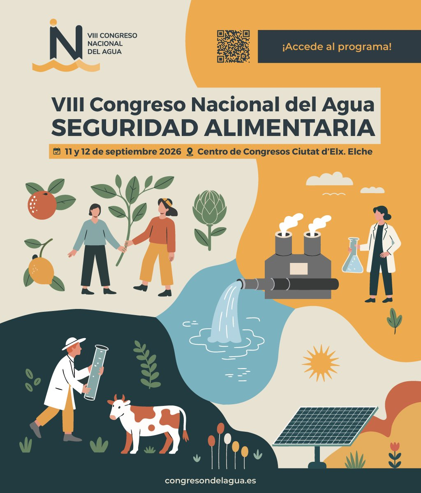
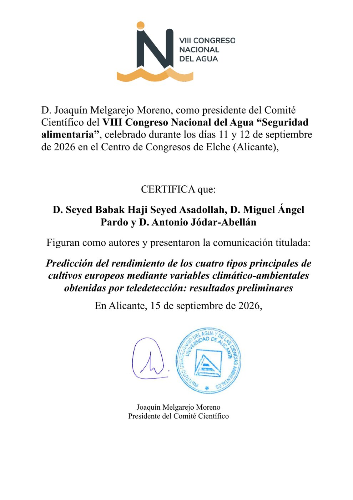
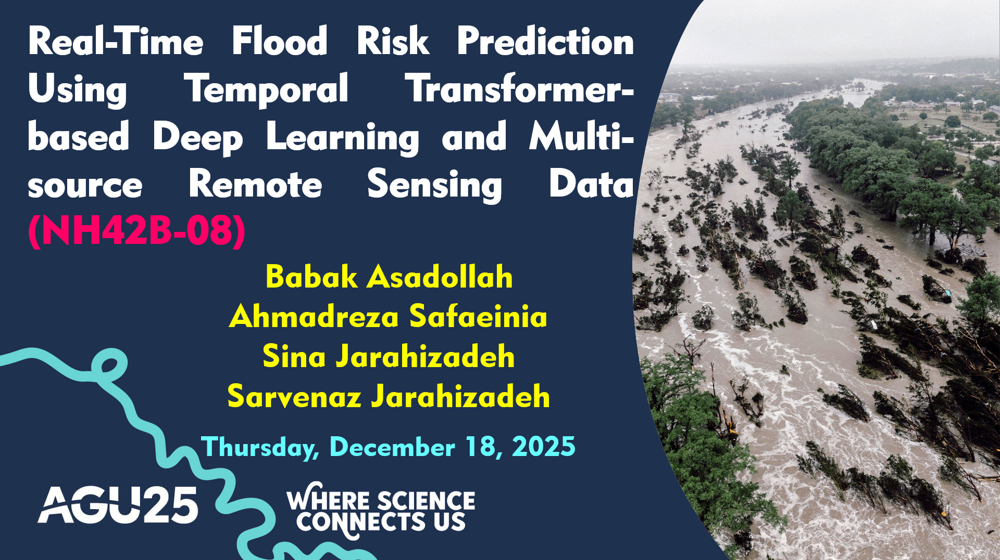
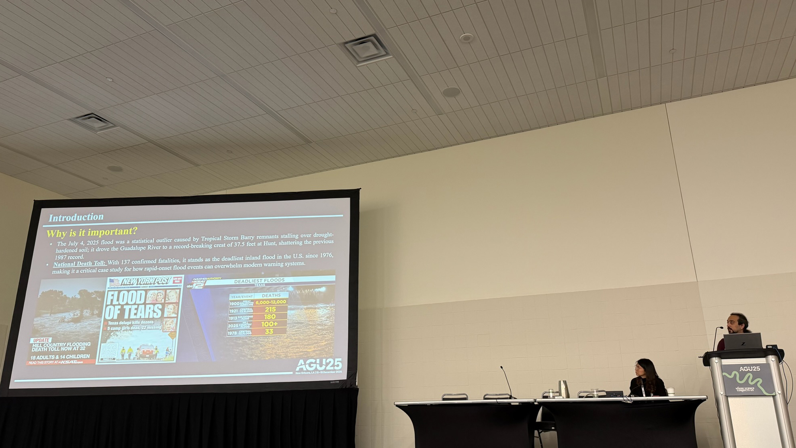

Conference Participation
Conference talks and presentations. Click any image to enlarge.
2026
Predicción del rendimiento de los cuatro tipos principales de cultivos europeos mediante variables climático-ambientales obtenidas por teledetección: resultados preliminares
Prediction of yield for the four main European crop types using climate-environmental variables derived from remote sensing: preliminary results


2025
Oral
Real-Time Flood Risk Prediction Using Temporal Transformer-based Deep Learning and Multisource Remote Sensing Data

agu2025-flood-1.jpg
agu2025-flood-2.jpg